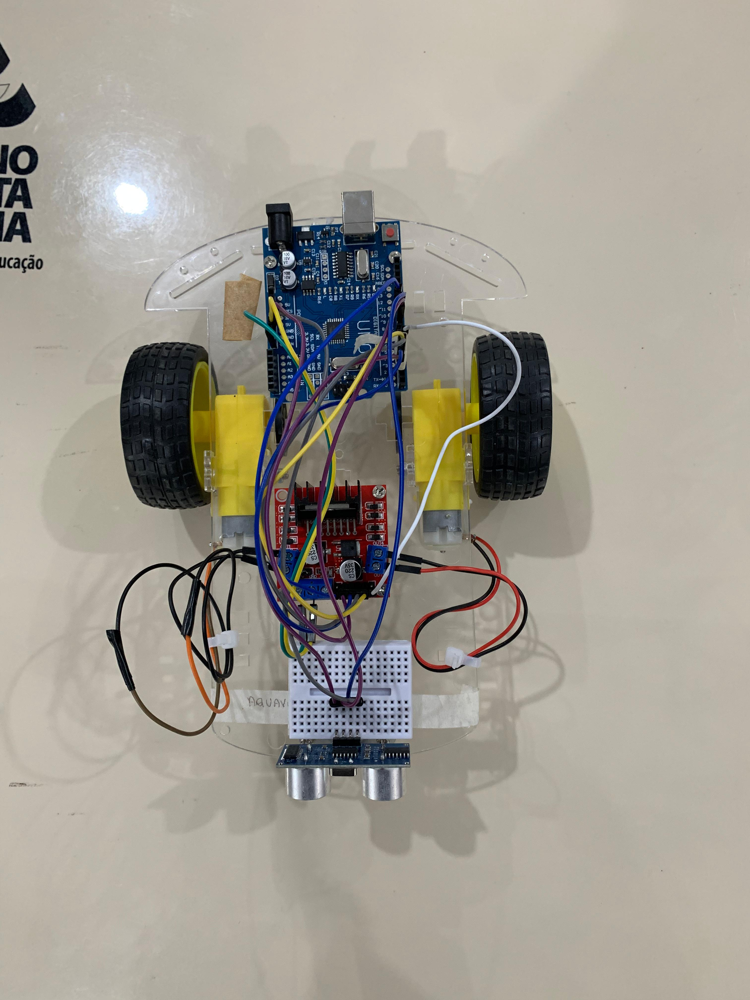
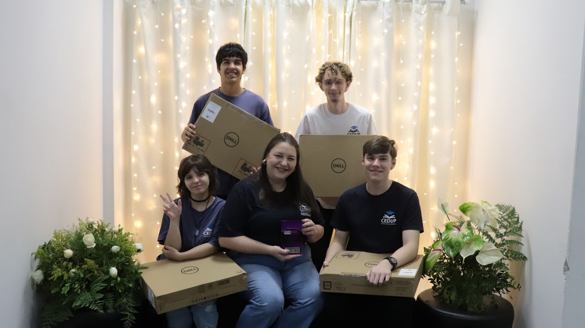
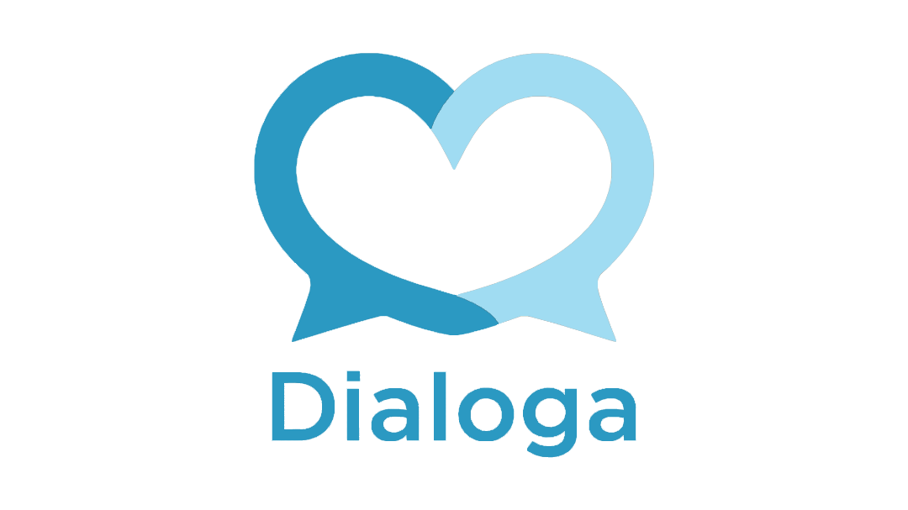

Meu nome é Guilherme Henrique Meier, Tenho 17 anos (2025), e estudo na escola CEDUP Perfeito Manoel de Aguiar. Atualmente estou no 3º ano do ensino médio, integrado com o curso técnico de ciência de dados desde o 2º ano. Sempre tive interesse em aprender coisas novas, visando sempre a excelência. Gosto da área de exatas, e a tecnologia foi um caminho natural a se seguir. Desde criança aprendendo com jogos, exercitando minha criatividade e pensamento lógico, fui entendendo meus gostos e hoje estou aqui.
No curso técnico, comecei meu aprendizado no Portugol, MySQL, Power BI, e após isso, desenvolvi conhecimento metodológico, realizando o referencial teórico do projeto AQUAVAC, que contou com mais de 40 páginas de pesquisa bibliográfica.
Aquavac: Desenvolvimento de um dispositivo para captação, tratamento e reuso de água em áreas alagadas. Que ficou em 3º lugar da Feira de Ciência e Tecnologia do CEDUP Perfeito Manoel de Aguiar
Imagem do protótipo do projeto
1º lugar no Desafio dos Dados da Fundação Telefônica Vivo em 2024: Idealização do Fuuto, um aplicativo que utiliza inteligência artificial para transformar a gestão de alimentos nas escolas.
Dialoga: Desenvolvimento de um aplicativo para o auxílio do programa de escuta especializada em Guaramirim/SC.
Tenho muito interesse na área da matemática, atualmente evoluindo meu conhecimento nesse ramo.
Atualmente estou aprofundando meu entendimento da língua inglesa.
Busco nos próximos meses, adquirir conhecimento profundo sobre economia, e principalmente finanças.
Lógica de programação;
Inglês intermediário;
Comunicativo;
Excel intermediário;
PowerBI intermediário;
MySQL intermediário.